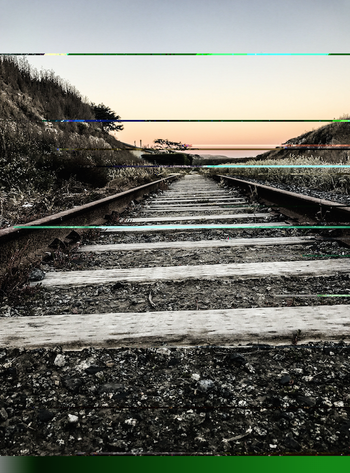
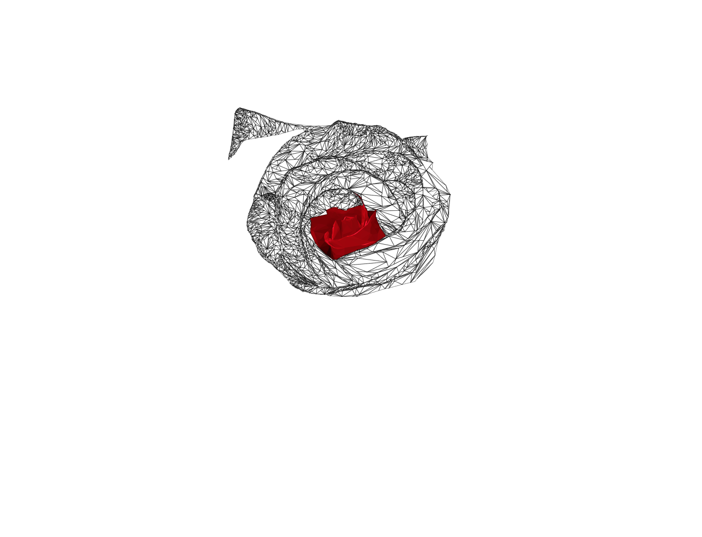

"On the Inside"

This image is a picture I took of my friend that, a road landscape photo, and a graffiti wall. I did a double exposure with the photo of my friend and the landscape by overlaying the images and with a mask slowly blur away the photo of my friends and leaving facial/significant features visible. I then put in a graffiti background. I wanted to show that even though someone is surrounded by certain people or activities or even acts a certain way, they could be completely different on the inside, hence the differences between the landscape and the graffiti. I was interested in trying a double exposure and once I was done with that, this is what came to mind. The art lives in my computer and is for digital use, not to be printed.
"Text Edit"
I used text edit on a picture I took. I went through and deleted big portions and pasted full wikipedia pages into text edit. After 8 different wikipedia pages and deleting big sections this is what the picture turned out to be.
"Still Recreation"
This is a recreation of a video made by DevinSuperTramp. His youtube videos showcase a multitude of action sports videos combined with very cinematic edits. I took one of his wakesurfing videos and at every cut in the video I took a screenshot. From there I went and took pictures and found pictures on the internet that were similar and replaced the stills of the video. This created this slideshow of pictures that relate to the video and shows how often there are cuts in the original video.
"Weather War"
This is a sound project where I took 30 seconds of audio from the Veitnam War and slowed it down. It doing this I got this slow rolling, thunderous noise that sounded stormy and like thunder. I added the picture so you can really visualize and get the feel of being there in the storm
"What is New Media Art?"
In this project I recreated a website using CSS. By taking influence from another person's work I created this question, What is New Media Art? I used love as my theme and thats what I came up with.
"Low Poly Beach"

I took this picture of the beach near my house in my hometown of Santa Cruz, California. I then decided to try a new form of art and recreate the image in all triangles. It brings this simplistic and geometric feel to the once flowy wavy picture.
"3D Model of the Space Needle"

This was one of the first projects I had in 3D modeling. I used Maya as my softwar and went and modeled the Space Needle. I got the inspiration to do this because I had just got back from a family trip to Seattle and saw the Space Needle. I am afriad of heights so being on the top of it wasn't the funnest thing. I think of this as a way for me to experience the Space Needle and what it looks like without having to be on top of it or by it.
"Cornell Box"

Another 3D modeling project. This one is a little more simple compared to the last one but it is still elegant and sleek. I modeled a few shelfs as my cornell box. I then 3D modeled individual cups and bottles by scanning them with a motion sensed camera. I added in lights and a marble texture to the final.
"Double Exposure"

I took a picture of my friend when we were on the bus together ans that was the start of this project. He gave me a landscape shot of an empty road and some trees and I went and tried my first double exposure with the two pictures. I added a little shading in the background of the image at the end to really make sure the center piece really popped.
"Polygon Rose"
This is the only project out of the ten that isn't complete yet. Even though it isnt complete I thought it deserved to be in the list. I am doing another low poly art of a rose and so far it looks amazing. I have put 35+ hours into this project so far making it as perfect as I can. I enjoy working on this project more and more each day and can't wait for it to be finished.